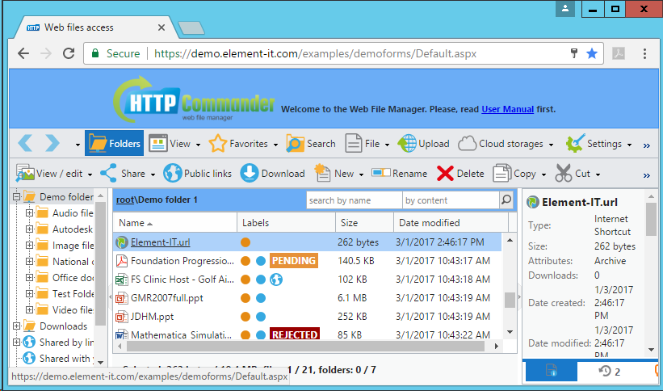

Aiuto relativo il web-manager dei file e dei documenti
Navigazione
 Elenco
Elenco
Accessibili una o piu` di una cartella directory. Le cartelle si visualizzano sulla sinistra nella forma dell’albero. Usate il tasto
Cartelle sulla barra degli strumenti per vusializzare o nascondere l’albero delle cartelle.
 Elenco
Elenco
Piu` a destra nel centro — l'elenco del contenuto della cartella selezionata. Per il passaggio alla cartella allegata o alla cartella della directory superiore cliccate con il mouse sul nome della cartella.
 Selezione del file
Selezione del file
Si puo` selezionare uno o piu` di un file o delle cartelle cliccando sugli elementi della lista o usando i tasti
Ctrl e
Shift. Anche con l’aiuto del menu contestuale potete evidenziare tutti i file o invertire la scelta evidenziata.
 Menu
Menu
Si puo` accedere al Menu Contestuale cliccando con il tasto destro del mouse o cliccando su
File sulla barra degli strumenti.
Operazioni principali con i file
Potete eseguire tutte le operazioni principali con dei file:
creazione, copiatura, revisione, spostamento, eliminazione, rinominazione, previsionamento, archiviazione ed estrazione.
Caricamento e scaricamento dei file
Caricamento
A seconda delle configurazioni dell'applicazione potete applicare parecchi metodi per il caricamento dei file:
- Standardizzato — caricamento dei file a uno a uno con aiuto delle funzionalità integrate del browser (con il tasto Browse...).
Attenzione! Le ultime versioni dei browser (Google Chrome, Mozilla Firefox, Microsoft Internet Explorer) supportono la possibilita` della scelta e del caricamento sincronicamente di piu` di un file. In caso se voi usate il browser Google Chrome dalla versione 11 e altri piu` recenti, si puo` scegliere e caricare le cartelle.
- Drag & Drop — in caso dell’utilizzo dell’ultima versione del vostro browser potete aggiungere dei file trascinandoli e successivamente caricarli parallelamente.
- Java — potete scegliere e caricare sincronicamente piu` di un file e piu` di una cartella.
- Flash — permette scegliere e caricare sincronicamente in una volta piu` di un file.
- Silverlight — la scelta ed il caricamento sincronico piu` di un file a parte a parte (questo permette caricare i file dalle dimensioni che superano 2 Gb). Questo procedimento permette di aggiungere i file trascinandoli.
- Google Drive — caricamento dei file dalla vostra archiviazione cloud
 Google Drive.
Google Drive.
- Dropbox — caricamento dei vostri file da
 Dropbox.
Dropbox.
- Microsoft OneDrive — caricamento dei file dalla vostra archiviazione
 OneDrive.
OneDrive.
- Box — caricamento dei vostri file da
 Box.
Box.
- Caricamento via URL — potete indicare l’indirizzo URL del file che si trova su Internet (compreso anche via FTP) oppure nei servizi di condivisione dei file come, ad esempio Dropbox,
Picasa,
Flickr,
 PhotoBucket,
PhotoBucket,
 Facebook.
Facebook.
Nota. Per il caricamento di piu` di un file potete zipparli in ZIP archivio, caricarlo e successivamente estrarlo usando il punto  Estrarre l'archivio nel menu contestuale.
Estrarre l'archivio nel menu contestuale.
Scaricamento
Scegliete uno o piu` di un file e/o cartella, cliccate su Scaricare (sulla barra degli strumenti o nel menu contestuale). A seconda delle impostazioni dall’elenco aperto potete scaricare i file uno alla volta oppure usare il
Caricatore Java per il caricamento di piu` di un file e piu` di una cartella.
Possono anche essere accessibili altri metodi di scaricamento dei file/cartelle:
- Comprimere e scaricare — il metodo per la creazione automatica dell’archivio dai file e dalle cartelle scelti con il seguente scaricamento dell’archivio ZIP.
 Archiviazioni cloud →
salvare in... Google Drive,
Dropbox, OneDrive, Box — potete caricare i file, le cartelle scelti nell’archiviazioni cloud popolari. L’informazione piu` dettagliata e` rappresentata nel paragrafo L’archiviazioni cloud.
Archiviazioni cloud →
salvare in... Google Drive,
Dropbox, OneDrive, Box — potete caricare i file, le cartelle scelti nell’archiviazioni cloud popolari. L’informazione piu` dettagliata e` rappresentata nel paragrafo L’archiviazioni cloud.
 Collegamento ai file e alle cartelle
Collegamento ai file e alle cartelle
E` la possibilita` che permette di scaricare il file velocemente senza dover caricare l’interfaccia principale oppure aprire la cartella necessaria. Nel menu contestuale scegliete il submenu  Accesso generale
(oppure trovate il tasto corrispondente sulla barra degli strumenti) e poi Collegamento al file/cartella.
Prestare attenzione che per l’utilizzo da altri utenti del link ricevuto occorre l’autenticazione e l’accesso a questo file o a questa cartella. In caso contrario si comunichera` dell’errore.
Accesso generale
(oppure trovate il tasto corrispondente sulla barra degli strumenti) e poi Collegamento al file/cartella.
Prestare attenzione che per l’utilizzo da altri utenti del link ricevuto occorre l’autenticazione e l’accesso a questo file o a questa cartella. In caso contrario si comunichera` dell’errore.
Coutenza dei file e delle cartelle
Potete creare i link ai file e alle cartelle che saranno accessibili per gli altri utenti senza l’autorizzazione. Per questo scegliete il file o la cartella necessari, in seguito nel menu contestuale scegliete il submenu L’accesso generale (oppure trovate il tasto corrispondente sulla barra degli strumenti) e dopo Creare link dell’accesso generale
. Questo da` la possibilita` all’accesso anonimo ai file/ cartelle. Qualsiasi utente persino colui che non ha l’account nel Web-manager puo` scaricare i file e aprire le cartelle usando questo link. Tale link alla cartella puo` anche presentare la possibilita` agli utenti di caricare i file, le cartelle (con l’archivio o uno alla volta) nel vostro catalogo. Durante la creazione del link accessibile potete indicare l’indirizzo della posta elettronica per la comunicazione dell’attivita` dell’uso di questo link.
 Collegamento delle web-cartelle (Web Folders link)
Collegamento delle web-cartelle (Web Folders link)
 Web-cartelle permettono di aprire i vostri cataloghi localmente nel sistema operativo usando il protocollo WebDAV. In questo caso potete
lavorare con i vostri file localmente senza l’utilizzo del browser e senza la necessita` di entrare ogno volta nel vostro account. Dovete solo aprire la cartella accesa come volume nel vostro sistema operativo (in specie in Microsoft
Windows – nel trasmettitore Windows Explorer). Si mantengono tutti i sistemi operativi popolari come, ad esempio Microsoft Windows, Apple Mac OS, Ubuntu ed altri.
Web-cartelle permettono di aprire i vostri cataloghi localmente nel sistema operativo usando il protocollo WebDAV. In questo caso potete
lavorare con i vostri file localmente senza l’utilizzo del browser e senza la necessita` di entrare ogno volta nel vostro account. Dovete solo aprire la cartella accesa come volume nel vostro sistema operativo (in specie in Microsoft
Windows – nel trasmettitore Windows Explorer). Si mantengono tutti i sistemi operativi popolari come, ad esempio Microsoft Windows, Apple Mac OS, Ubuntu ed altri.
Per connettersi eseguite i seguenti passi:
- Evidenziare la cartella necessaria; nel menu contestuale passate al submenu ещё (oppure cliccate il tasto corrispondente sulla barra degli strumenti) e successivamente Connettersi alla web-cartella.
- In caso se voi usate il sistema operativo Windows coppiate un comando della connessione da quelle proposte, mettetelo nella riga di comando Windows (possono essere accessibili fino a tre comandi: per la cartella corrente, per la cartella superiore e per la cartella principale). Ad esempio:
net use "*" "http://example.com/htcomnet/hcwebdav/". In seguito cliccate OK e se sara` necessario inserite i vostri dati account. Dopo di che nella gestione risorse apparira` la cartella connessa.
- Per i sistemi operativi Windows e` accessibile anche un’altro metodo della connessione. Coppiate evidenziato in grossetto link per la connessione. Oppure coppiate il link per la cartella della directory dall'area di sotto:
Successivamente nella gestione risorse Windows cliccate con il testo destro del mouse sopra il segno Computer (oppure Questo computer
per Windows 8, 8.1). Scegliete il punto Aggiungere la cartella di rete. Nel dialogo aperto cliccate
Avanti. Scegliete la cartella di rete che sintonizzate e cliccate su Avanti. Nell’area con l’indirizzo inserite il link coppiato e cliccate Avanti.
- Nel Mac OS: nel menu del programma Finder scegliete Go → Connect
to Server, inserite il link coppiato nell’area Server address, cliccate Connect;
nel dialogo aperto scegliete Registered user e cliccate Сonnect.
- Nel Ubuntu: passate al Go → Location.... Inserite il link coppiato nell’area con l’indirizzo. In caso se il link inizia: con il simbolo http://, cambiateli ai dav://,
con il simbolo https:// – davs://.
Dopo la connessione della web-cartella potete aprirla ripetutamente senza l’uso del browser (persino dopo il riavvio del computer).
Considerate, in caso se avete cambiato il password sara` indispensabile connettersi nuovamente alla cartella di rete (escluso il caso quando si usa il controllo installato Windows).
Vedi anche:
Using the WebDAV Redirector with OneDrive Part 1 - Standard Security
Using the WebDAV Redirector with OneDrive Part 2 - Two-Step Verification
 Ulteriori informazioni sui file
Ulteriori informazioni sui file
Potete visualizzare ed indicare le proprieta`, i commenti, le descrizioni oppure altre ulteriori informazioni sui file e sulle cartelle, cliccando nel menu contestuale il punto Proprieta`.
Nota! I dati si salvano persino in caso se i file o le cartelle saranno coppiati, spostati o rinominati.
Visualizzazione e revisione dei documenti, dell’immagini
Web-file manager ha molti possibilita` per il lavoro con dei documenti.
Visualizzazione dei documenti
I documenti testuali e i documenti in PDF, i file dell’immagini potete visualizzare direttamente nel browser scegliende il punto  Visualizzazione / revisione → Mostrare nel browser nel menu contestuale o sulla barra degli strumenti.
Visualizzazione / revisione → Mostrare nel browser nel menu contestuale o sulla barra degli strumenti.
Se il catalogo contiene i file dell’immagini in questo caso per visualizzarli come il slide show si puo` usare l’opzione
Visualizzazione / revisione →  Visualizzazione dell’immagini, oppure commutare il tipo dell’elenco dei file nella modalita` della visualizzazione degli schizzi (il tasto sulla barra degli strumenti
Visualizzazione dell’immagini, oppure commutare il tipo dell’elenco dei file nella modalita` della visualizzazione degli schizzi (il tasto sulla barra degli strumenti  Modalita` →
Modalita` →  Schizzi).
Schizzi).
Oltre a cio` potete usare online-servizi Google Docs,  Microsoft Office Web Viewer, Box View
per la visualizzazione dei documenti dai formati diversi.
Microsoft Office Web Viewer, Box View
per la visualizzazione dei documenti dai formati diversi.
Per questo evidenziate il file necessario, scegliete nel menu (o sulla barra degli strumenti) Visualizzazione / revisione il punto occorrente (se ` permesso dall’amministratore). Successivamente sara` formato un link passando al quale potrete visualizzare il file.
Elenco dei formati supportati per la visualizzazione nel servizio Google Docs:
pdf, doc, docx, ppt, pptx, tif, tiff, xls, xlsx, pages, ai, psd, svg, eps, ps, xps, ttf, zip, rar, dxf, txt, css,
html, htm, php, c, cpp, h, hpp, js.
Elenco dei formati supportati per la visualizzazione nel Microsoft Office Web Viewer:
doc, docx, docm, dotm, dotx, xls, xlsx, xlsb, xlsm, pptx, ppsx, ppt, pps, pptm, potm, ppam, potx, ppsm
(inoltre le dimensioni dei documenti del Word e del PowerPoint non devono superare 10 MB e dei documenti Excel – 5 MB).
Elenco dei formati supportati per la visualizzazione nel Box View:
pdf, doc, docx, ppt, pptx, xls, xlsx, txt, py, js, xml, css, md, pl, c, m, json.
Anche può convertire vari tipi di file sull'aiuto del servizio di  CloudConvert ( View / edit → Convert with CloudConvert).
CloudConvert ( View / edit → Convert with CloudConvert).
Online-revisione dei documenti
Potete modificare i documenti testuali dalle dimensioni piccole scegliendo nel menu contestuale (o sulla barra degli strumenti) il punto Visualizzazione / revisione →  Modificare come il documento testuale.
Modificare come il documento testuale.
Inoltre con l’aiuto del servizio  Zoho Docs potete modificare i formati popolari dei software per ufficio
(doc, docx, xls, xlsx, ppt, pptx, pps, odt, ods, odp, sxw, sxc, sxi, wpd, rtf, txt, html, csv, tsv),
scegliendo Visualizzazione / revisione → Modificare in Zoho Docs.
Zoho Docs potete modificare i formati popolari dei software per ufficio
(doc, docx, xls, xlsx, ppt, pptx, pps, odt, ods, odp, sxw, sxc, sxi, wpd, rtf, txt, html, csv, tsv),
scegliendo Visualizzazione / revisione → Modificare in Zoho Docs.
File dell’immagini (jpg, jpeg, png, gif, bmp, psd, pxd) si puo` modificare con l’aiuto di online-servizio
 Pixlr: Visualizzazione / revisione → Modificare in Pixlr. Oltre alla revisione nel Pixlr potete creare le nuove immagini usando il comando nel menu contestuale o nella barra degli strumenti
Pixlr: Visualizzazione / revisione → Modificare in Pixlr. Oltre alla revisione nel Pixlr potete creare le nuove immagini usando il comando nel menu contestuale o nella barra degli strumenti Creare → Immagine nel Pixlr.
Creare → Immagine nel Pixlr.
Il metodo principale della online-revisione del software per ufficio e` installati sul computer applicazioni
Microsoft Office, oppure gratuiti
 Apache OpenOffice,
Apache OpenOffice,  LibreOffice. Per di piu` non dovrete scaricare e caricare il file dopo la revisione. Microsoft Office, OpenOffice, LibreOffice lo faranno automaticamente. Sufficiente che questi applicazioni siano installati sul vostro PC.
LibreOffice. Per di piu` non dovrete scaricare e caricare il file dopo la revisione. Microsoft Office, OpenOffice, LibreOffice lo faranno automaticamente. Sufficiente che questi applicazioni siano installati sul vostro PC.
Come questo avviene:
- Voi scegliete il file di uno dei formati sostenuti da Microsoft Office: accda, accdb, accdc,
accde, accdp, accdr, accdt, accdu, ade, adp, maf, mam, maq, mar, mat, mda, mde,
mdt, mdw, laccdb, snp, csv, dbf, dif, ods, prn, slk, xla, xlam, xls, xlsb, xlsm,
xlsx, xlt, xltm, xltx, xlw, xml, xps, obi, oft, ost, prf, pst, msg, oab, iaf, emf,
odp, pot, potm, potx, ppa, ppam, pps, ppsm, ppsx, ppt, pptm, pptx, pptx, rtf, thmx,
tif, wmf, xml, xps, doc, docm, docx, dot, dotm, dotx, htm, html, mht, mhtml, odt,
rtf, txt, wps, xml, xps, btr, dwt, elm, fwp, htx, mso
oppure OpenOffice / LibreOffice: sxd, sxm, sxi, sxc, sxw, odb, odf, odt, ott,
oth, and, odm, sxw, stw, sxg, doc, dot, xml, docx, docm, dotx, dotm, wpd, wps, rtf,
txt, csv, sdw, sgl, vor, uot, uof, jtd, jtt, hwp, 602, pdb, psw, ods, ots, sxc,
stc, xls, xlw, xlt, xlsx, xlsm, xltx, xltm, xlsb, wk1, wks, 123, dif, csv, sdc,
vor, dbf, slk, uos, uof, pxl, wb2, odp, odg, std, otp, otg, sxi, sti, ppt, pps,
pot, pptx, pptm, potx, potm, ppsx, sda, sdd, sdp, vor, uop, uof, cgm, bmp, jpeg,
jpg, pcx, psd, sgv, wmf, dxf, met, pgm, ras, svm, xbm, emf, pbm, plt, sda, tga,
xpm, eps, pcd, png, sdd, tif, tiff, gif, pct, ppm, sgf, vor, mml.
- Successivamente nel menu Visualizzazione / revisione dovete scegliere un comando: Revisionare in MS Office oppure Revisionare in OpenOffice / LibreOffice.
Dopodiché si avvia l’applicazione corrispondente che aprira` il file scelto per la revisione. Se per qualche ragione il programma non si e` avviata allora coppiate il link per il file e apritelo con l’applicazione necessaria Microsoft Office, OpenOffice o LibreOffice.
- Per salvare le modifiche fatte, premete sulla tastiera la combinazione Ctrl+S oppure il comando Salvare
nel menu del file nell’applicazione Microsoft Office, OpenOffice o LibreOffice. In questo caso il documento sara` salvato e caricato automaticamente.
Possibilita` ed impostazioni Microsoft Office:
- Microsoft Office per impostazione predefinita non funziona con la verifica accesa dell’autenticità del Basic
senza la connessione SSL protetta (non permette di aprire il documento oppure lo apre nella modalità di sola lettura). Se durante l’avvio dell’applicazione avete ricevuto una simile notifica potete cambiare questa situazione mediante l’aggiunta dei cambiamenti nel registro Windows. Per questo effettuate i seguenti passi (per l’informazione piu` dettagliata rivolgetevi alla voce
KB2123563):
- Attenzione! E` raccomandato con insistenza per Windows XP, Server 2003, Vista, 7 installare
il rinnovo Microsoft Web Folders (2.3 МБ).
- Microsoft Office supporta il blocco dei file per la prevenzione della revisione simultanea da piu` di un’utente. Se il file fu bloccato da un’altro utente voi non potrete cambiarlo ma avrete la possibilita` di vusializzarlo e appena il file sara` accessibile – avrete una corrispondente notifica.
- Per impostazione predefinita Microsoft Office blocca la revisione del documento. Dopo l’avviamento della possibilita` di cambiamento del documento il file si scarica dal server per una seconda volta. Per l’incremento dell’effettivita` potete avviare nell’impostazioni la possibilita`
di revisionare il file subito all’apertura: nel menu Microsoft Office scegliete File → Impostazioni →
Centro di controllo → Impostazioni del centro di controllo... (кнопка) → Modalita` della visualizzazione protetta,
togliete il segno dal punto Avviare la modalita` della visualizzazione protetta per i file dall’Internet.
- Microsoft Office 2010 non sostiene i link per i file dalla lunghezza di piu` di 255 simboli, percio` cercate di usare per i file i nomi corti con dei simboli ASCII.
Possibilita` ed impostazioni OpenOffice, LibreOffice:
Questi applicazioni sono gratuiti ed accessibili sui siti OpenOffice,
LibreOffice per molti sistemi operativi. Per il momento attuale OpenOffice non supporta I blocchi dei file durante la coutenza. LibreOffice sostiene parzialmente la possibilita` del blocco. Per l’avvio di questi applicazioni si usa Java-applet. Se non volete permettere l’avvio di questo applet allora potete coppiare il link per il file e aprirlo direttamente nel dialogo dell’apertura dei file OpenOffice, LibreOffice.
Impostazioni raccomandate per OpenOffice, LibreOffice:
- Se all’apertura del documento non volete ogni volta inserire username/password allora potete avviare Avviamento veloce
OpenOffice (LibreOffice), che conserva l’informazione dell’utente:
passare al Servizio → Parametri → OpenOffice (LibreOffice) → Memoria
e segnate il punto Caricare OpenOffice (LibreOffice) durante l’avvio del sistema.
- Per l’apertura ed il salvamento dei documenti sul link (senza l’utilizzo di Java-applet), dovete accendere la seguente impostazione: Servizio → Parametri → OpenOffice (LibreOffice) →
Utilizzare i dialoghi OpenOffice (LibreOffice).
Archiviazioni cloud
Nel menu contestuale o sulla barra degli strumenti (a seconda dell’impostazioni) e` accessibile il menu
Archiviazioni cloud,
che permette di interaggire (caricare e scaricare i file, le cartelle) con i servizi cloud del magazzino di dati: Google Drive, Dropbox, Microsoft OneDrive, Box.
Caricamento, salvamento dei dati in Google Drive (online redattore e coutenza dei documenti)
Potete salvare i documenti nel vostro Google Drive ( Archiviazioni cloud →  salvare in... → Google Drive) oppure caricarli ( Archiviazioni cloud →
salvare in... → Google Drive) oppure caricarli ( Archiviazioni cloud →  caricare da... → Google Drive). Dopo il salvamento dei documenti nel vostro Google Drive potete modificarli direttamente nel browser (con l’aiuto delle proprieta` del Google) e successivamente scaricare indietro nel web-file manager. Durante l’autorizzazione nel Google Drive l’account (username/password) non si trasmettono sul server del web-file manager.
caricare da... → Google Drive). Dopo il salvamento dei documenti nel vostro Google Drive potete modificarli direttamente nel browser (con l’aiuto delle proprieta` del Google) e successivamente scaricare indietro nel web-file manager. Durante l’autorizzazione nel Google Drive l’account (username/password) non si trasmettono sul server del web-file manager.
Dropbox —
il servizio cloud del magazzino di dati, di copiatura di riserva, di sincronizzazione, di scambio e della coutenza dei file gratuito.
Per il salvamento in Dropbox evidenziate i file, le cartelle necessari e utilizzate il comando Archiviazioni cloud → salvare in... → Dropbox. Per il caricamento — Archiviazioni cloud → caricare da... → Dropbox. Durante l’autorizzazione il vostro account si trasmettono solo ai server di Dropbox.
Microsoft OneDrive
Potete registrarvi nel servizio cloud del magazzino di dati, della modifica e dello scambio dei documenti gratuito
Microsoft OneDrive (il Microsoft OneDrive (se l’avete gia` un account Microsoft in questo caso non dovrete registrarvi per l’accesso al OneDrive!). Con l’aiuto del web-file manager potete salvare i vostri file, le cartelle nel vostro OneDrive ( Archiviazioni
cloud → salvare in... → Microsoft OneDrive) oppure caricarli ( Archiviazioni cloud → caricare da... → Microsoft OneDrive). Perdipiu` sul sito OneDrive potete modificare i suoi documenti e scambiarli con gli altri utenti.
Box —
il servizio cloud del magazzino e della coutenza dei documenti
Per il salvamento nel Box, evidenziate i file, le cartelle necessari ed utilizzate il comando Archiviazioni cloud → salvare in... → Box. Per il caricamento — Archiviazioni cloud → caricare da... → Box.
Collegamenti ipertestuali
Web-file manager permette di aprire i collegamenti ipertestuali. Si presentano come i file dalle dimensioni piccole con l’estensione .url.
Successivamente premendo su questo collegamento si apre una nuova finestra del browser (oppure un nuovo widget di navigazione) con il contenuto che si trovano su questo link.
Esempio

Per la creazione del file del collegamento ipertestuale (.url) e` necessario avere Internet Explorer:
- Aprite la web-pagina necessaria nel Internet Explorer.
- Aprire il menu dei file (premete sul tasto F10 o Alt, se non si visualizza), dopo
File → Inviare → Collegamento sul desktop.
- Caricate il collegamento creato nel web-file manager.
Potete anche cambiare il nome del file con il collegamento ipertestuale ma non cambiate l’estensione del file.
Nota. .URL file sono standartizzati per Windows INI i file con l’estensione propria. Potete crearli nel redattore testuale se non avete Internet Explorer oppure non volete usarlo.
Interfaccia mobile per i smartphone e per i dispositivi con gli schermi tattili 


Sui vostri dispositivi potete utilizzare 100% dell’interfaccia mobile:
sulla barra degli strumenti cliccate su Impostazioni → Interfaccia mobile,
oppure nella barra degli indirizzi del browser indicate Default.aspx?Mobile=.
Applicazione supporta i seguenti dispositivi: iPhone/iPad, Android,
Blackberry v.6+, Bada, Windows Mobile, Phone e molti altri sistemi operativi dei dispositivi mobili.
Potete anche scaricare l’applicazione mobile per i vostri iPhone/iPad:
http://itunes.apple.com/us/app/http-commander/id561413475?mt=8
и Android: https://play.google.com/store/apps/details?id=com.elementit.httpcommander.
Per l’informazione piu` dettagliata rivolgetevi all’aiuto degli utenti dei dispositivi mobili..
Impostazioni
Sulla barra degli strumenti cliccate su Impostazioni e scegliete la versione dell’impostazioni necessaria. Nel menu visualizzato sono accessibili le seguenti possibilita`:
 Cambiamento della lingua dell’interfaccia.
Cambiamento della lingua dell’interfaccia. Cambiamento della password.
Cambiamento della password. Cambiamento dell’indirizzo della posta elettronica.
Cambiamento dell’indirizzo della posta elettronica.- Trapasso all’interfaccia mobile (questa proprieta` puo` essere disattivata dall’amministratore).